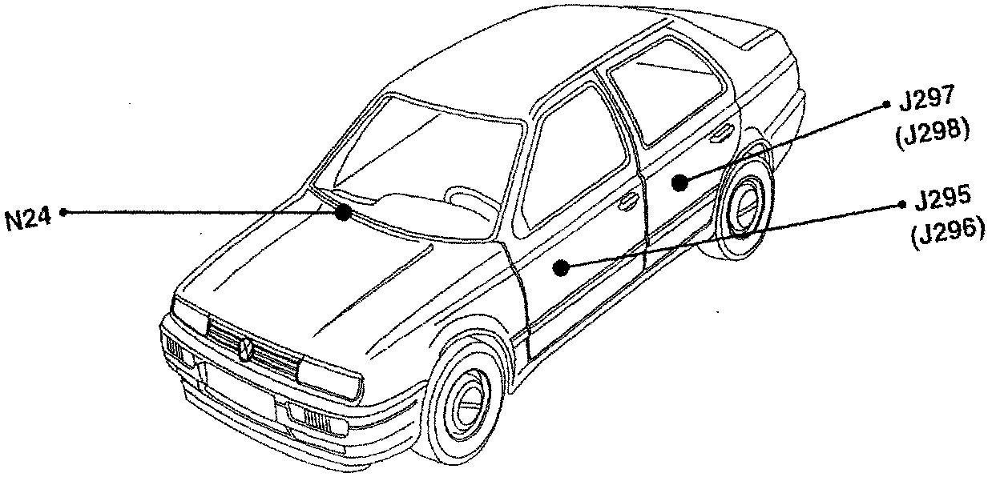

Operation CHARM
: Car repair manuals for everyone.
Home
>>
Volkswagen
>>
1997
>>
GTI (1H1) V6-2.8L (AAA)
>>
Repair and Diagnosis
>>
Relays and Modules
>>
Relays and Modules - Windows and Glass
>>
Power Window Control Module
>>
Locations
>>
Left Front
Left Front
J295, J296, J297, J298, N24:

Component Location View
J295, J297:
Component View
J295 LF Power Window Control Module
-
Inside left-front door
-
Part of power window regulator and power window motor assembly